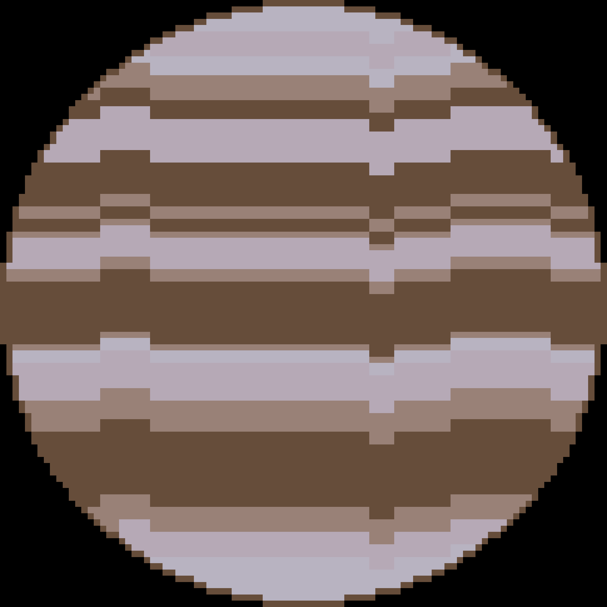

GJ 900 b är raka motsatsen till PSR J1719-1438 b. Det är en gasjätte som är 11 gånger så massiv som Jupiter, men planetens omloppsbana är extrem. Det tar 1265634,4 (~1,265 miljoner) år för planeten att kretsa runt sina stjärnor. Den ligger 12000 AU från sina stjärnor. Vilket är 12000 gånger avståndet från jorden till solen. Systemet GJ 900 består av tre stjärnor, en K-typ stjärna, och två M-dvärgstjärnor.